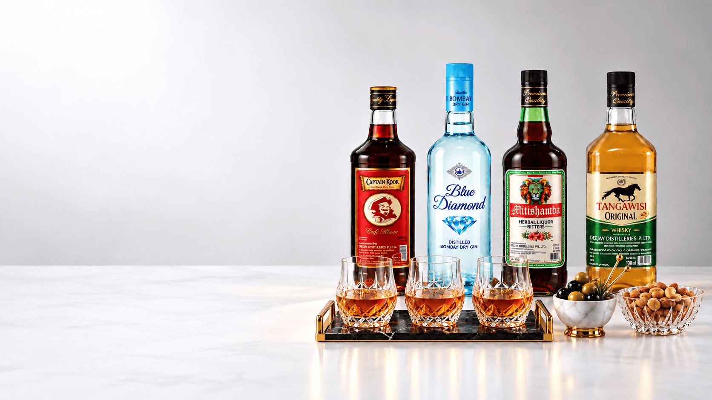
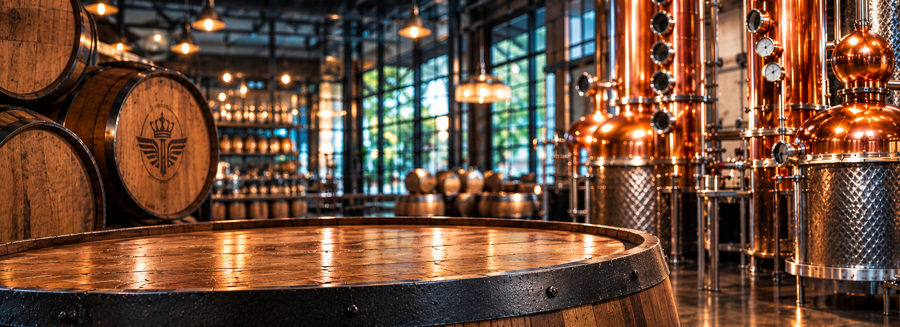

International buyers evaluating a bottled spirits supplier need more than a product list.

Extra Neutral Alcohol (ENA) is a technical product category, so sourcing decisions should be based

Exporting bottled alcohol is a coordinated process involving the product supplier.

For a spirits distributor, portfolio planning is a balance between customer demand.

Private-label or custom-packaged spirits projects require coordination across product specification.
Try searching for different keywords or select "All Articles" to browse all insights.
You must be 18 years old or older to enter this site.
Use of this site is for personal use in countries and territories where the consumption of alcohol beverages is lawful, and for persons who are lawfully permitted to consume alcohol beverages. By entering here you agree to our Terms and Conditions.